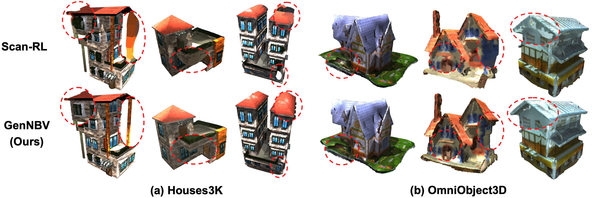
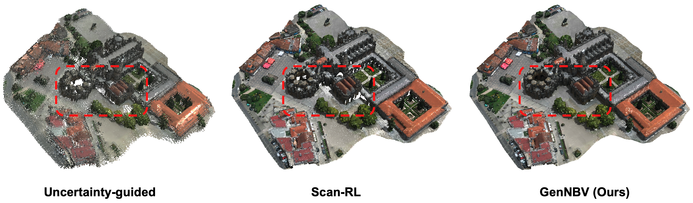
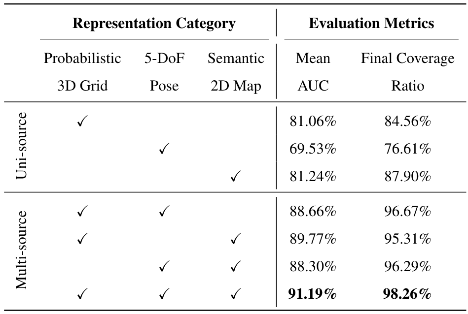
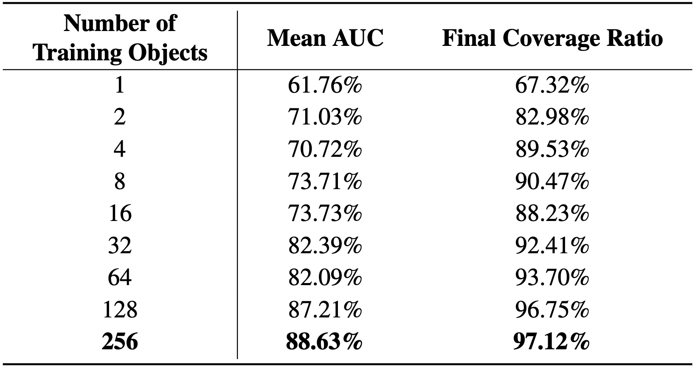
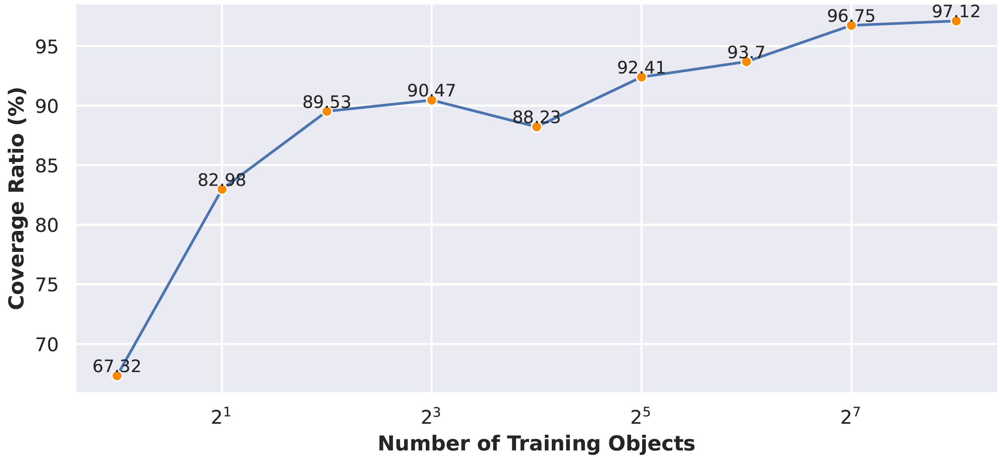

GenNBV: Generalizable Next-Best-View Policy for Active 3D Reconstruction
CVPR 2024Abstract
While recent advances in neural radiance field enable realistic digitization for large-scale scenes, the image-capturing process is still time-consuming and labor-intensive. Previous works attempt to automate this process using the Next-Best-View (NBV) policy for active 3D reconstruction. However, the existing NBV policies heavily rely on hand-crafted criteria, limited action space, or per-scene optimized representations. These constraints limit their cross-dataset generalizability. To overcome them, we propose GenNBV, an end-to-end generalizable NBV policy. Our policy adopts a reinforcement learning (RL)-based framework and extends typical limited action space to 5D free space. It empowers our agent drone to scan from any viewpoint, and even interact with unseen geometries during training. To boost the cross-dataset generalizability, we also propose a novel multi-source state embedding, including geometric, semantic, and action representations. We establish a benchmark using the Isaac Gym simulator with the Houses3K and OmniObject3D datasets to evaluate this NBV policy. Experiments demonstrate that our policy achieves a 98.26% and 97.12% coverage ratio on unseen building-scale objects from these datasets, respectively, outperforming prior solutions.

To determine the best view for 3D reconstruction, previous methods only chose from hand-crafted action space or based on object-centric capturing, lacking the ability to generalize to unforeseen scenes (Left). With our end-to-end trained, generalized free-space policy, it can generalize to unseen objects, enabling the captured drone to image from any viewpoint (Right).
Framework Overview

Overview of our proposed framework GenNBV. Our end-to-end policy takes the historical multi-source observations as input, transforms them into a more informative scene representation, and produces the next viewpoint position. A reward signal will be returned at training time to optimize the end-to-end policy for maximizing the expected cumulative reward in one episode. Specifically, the signal is the increased coverage ratio after collecting a new viewpoint.
Generalizability Evaluation

Evaluation results of Next-Best-View policies for active 3D reconstruction on Houses3K and the house category from OmniObject3D (cross-dataset generalization).
The number of views is set to 30 and 20 for Houses3K and OmniObject3D, respectively.
"*": the policy is trained on Houses3K training set and evaluated on holdout Houses3K test set and OmniObject3D house category.
"†": the policy heavily relies on optimized per-scene representation (NeRF), thus is directly trained and evaluated on testing objects.
"*": the policy is trained on Houses3K training set and evaluated on holdout Houses3K test set and OmniObject3D house category.
"†": the policy heavily relies on optimized per-scene representation (NeRF), thus is directly trained and evaluated on testing objects.

The visualization results of unseen 3D objects reconstructed by Scan-RL and our model to compare the generalizability. (a) Unseen buildings from the test set of Houses3K. (b) Unseen buildings from OmniObject3D.
It's quite obvious that some parts of the model reconstructed by Scan-RL are wrong or missing. For example, the second object in the first row has a pillar in the wrong shape. Scan-RL fails to reconstruct the roof edge for the fourth object from OmniObject3D, as shown in the third row.
Generalization on Non-house Categories

The cross-dataset generalization for non-house categories. We train the baseline Scan-RL and our GenNBV on Houses3K and generalize them to non-house categories from OmniObject3D and an indoor scene from Replica.

The visualization results of an unseen 3D outdoor scene with enormous details from Objaverse, reconstructed by Uncertainty-guided, Scan-RL and our model.
Compared to the uncertainty-guided method and Scan-RL, the scene reconstructed by our method is more watertight and has fewer holes on the ground and building surface, especially in the region highlighted by the red box.
Ablation Study

Ablation studies of representation categories in our framework on unseen Houses3K test set.

Ablation studies of the number of training objects in our framework on OmniObject3D house category.

The curve of coverage (%) with the increasing number of training objects on OmniObject3D house category.
Citation
If you find this project helpful, please cite us:@article{chen2024gennbv,
author = {Chen, Xiao and Li, Quanyi and Wang, Tai and Xue, Tianfan and Pang, Jiangmiao},
title = {GenNBV: Generalizable Next-Best-View Policy for Active 3D Reconstruction},
journal = {arXiv preprint arXiv:2402.16174},
year = {2024},
}